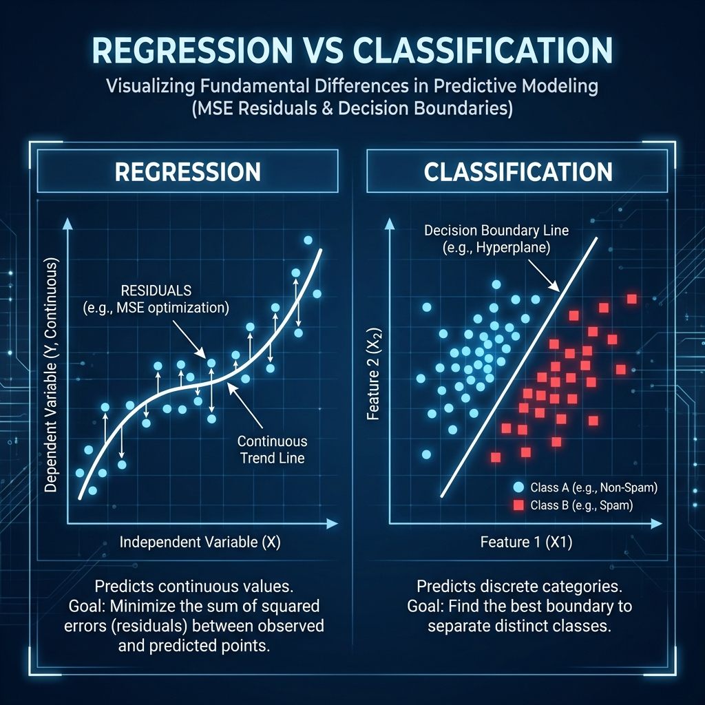
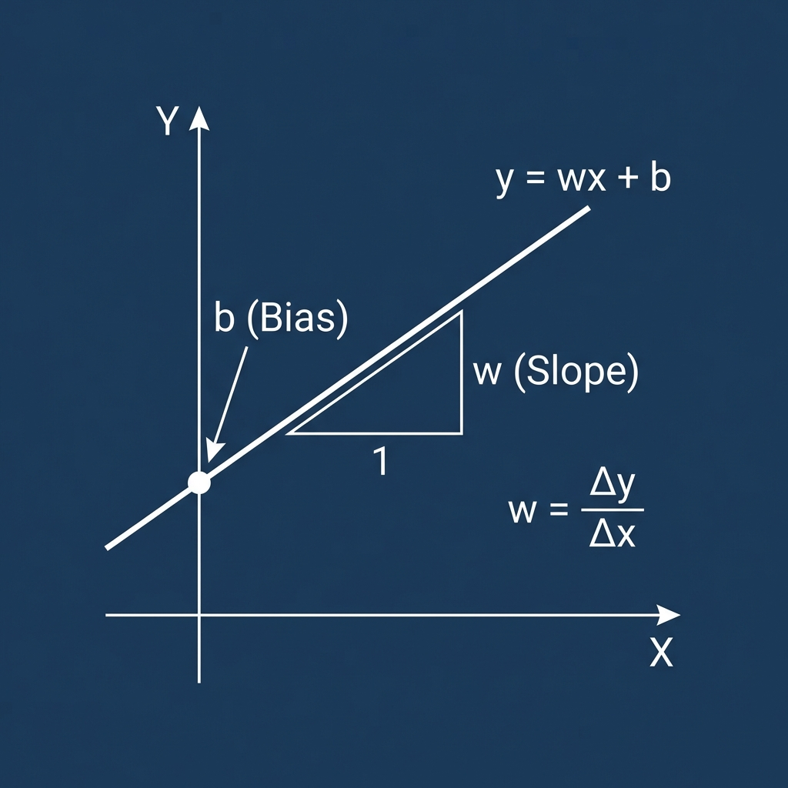
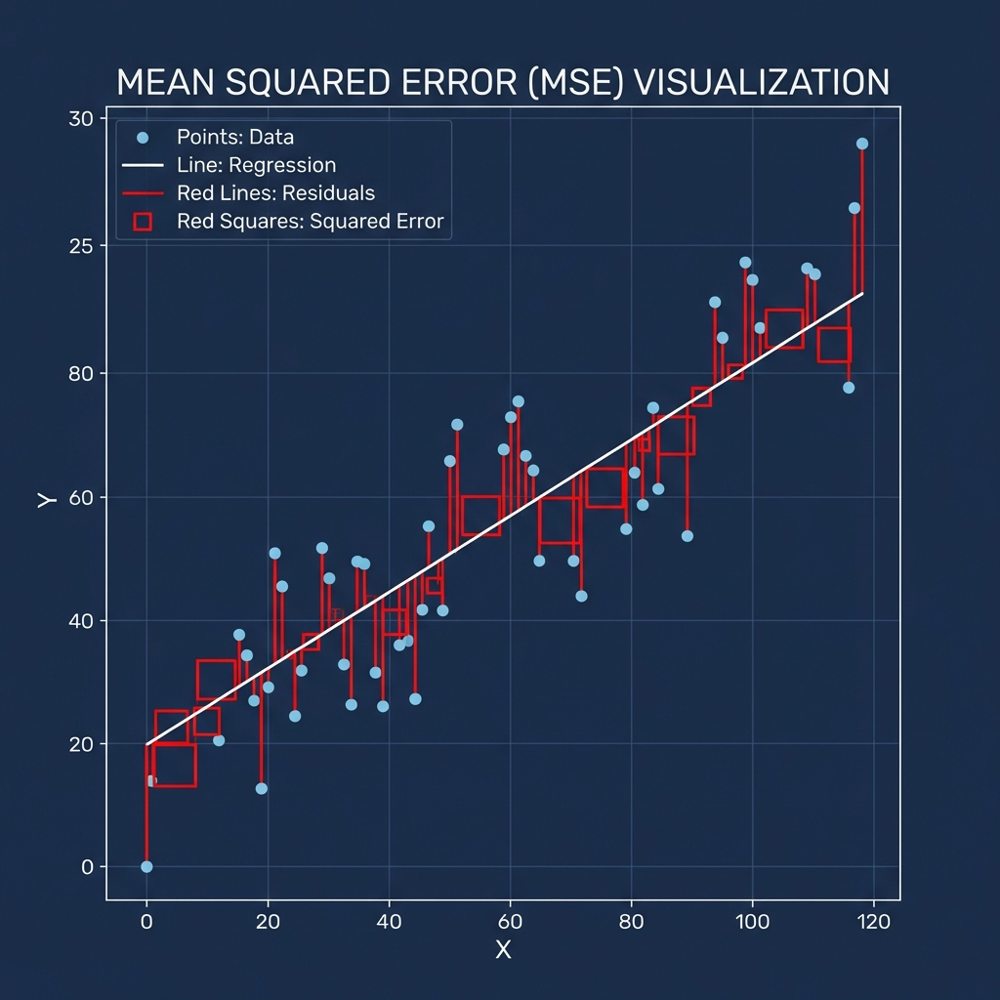
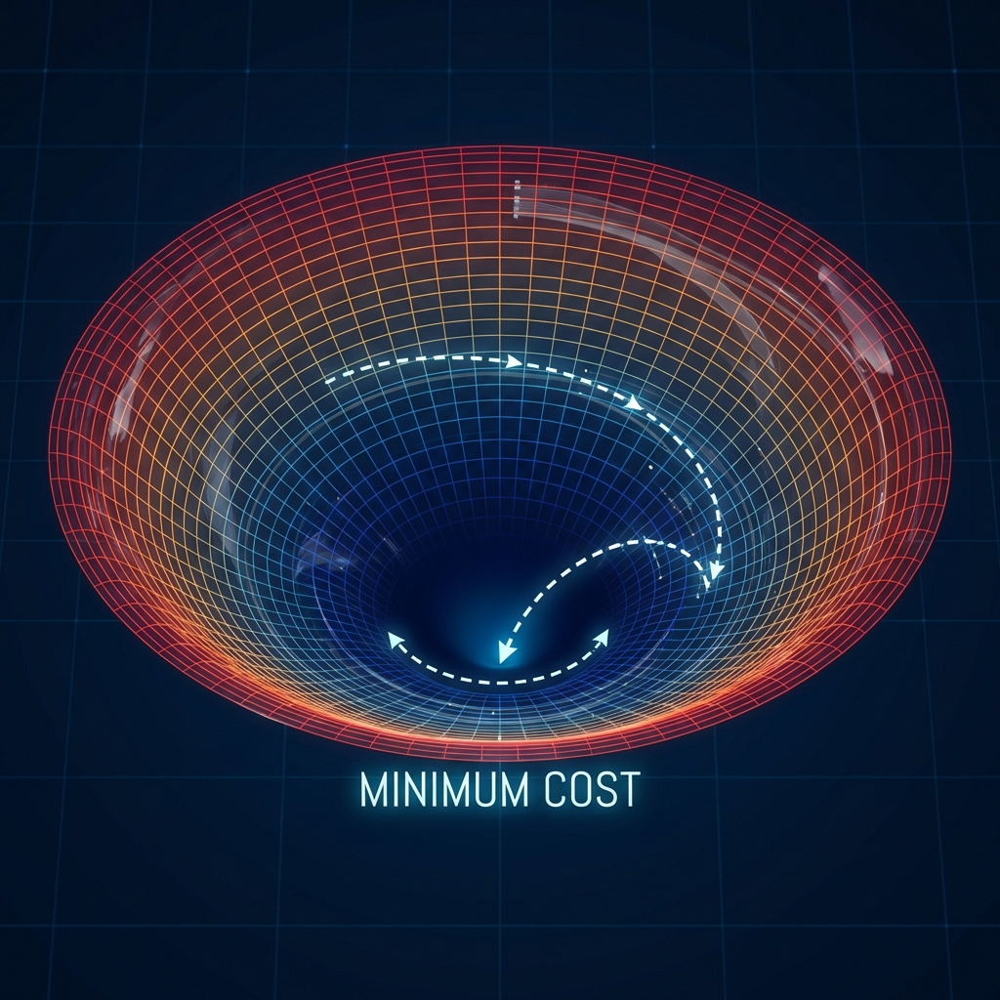
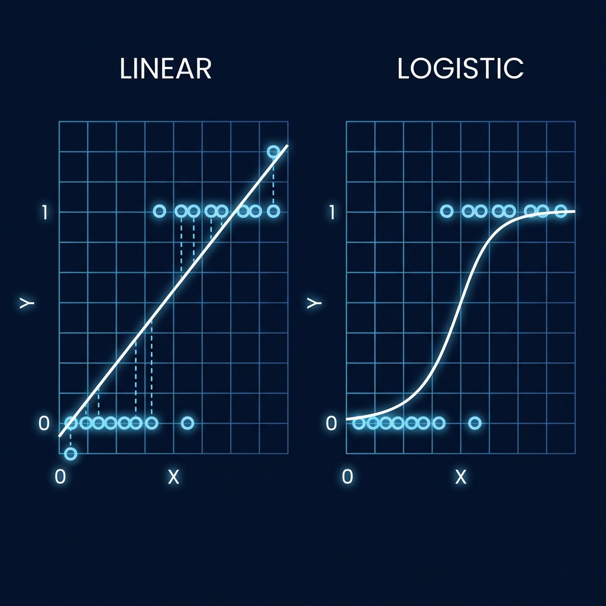
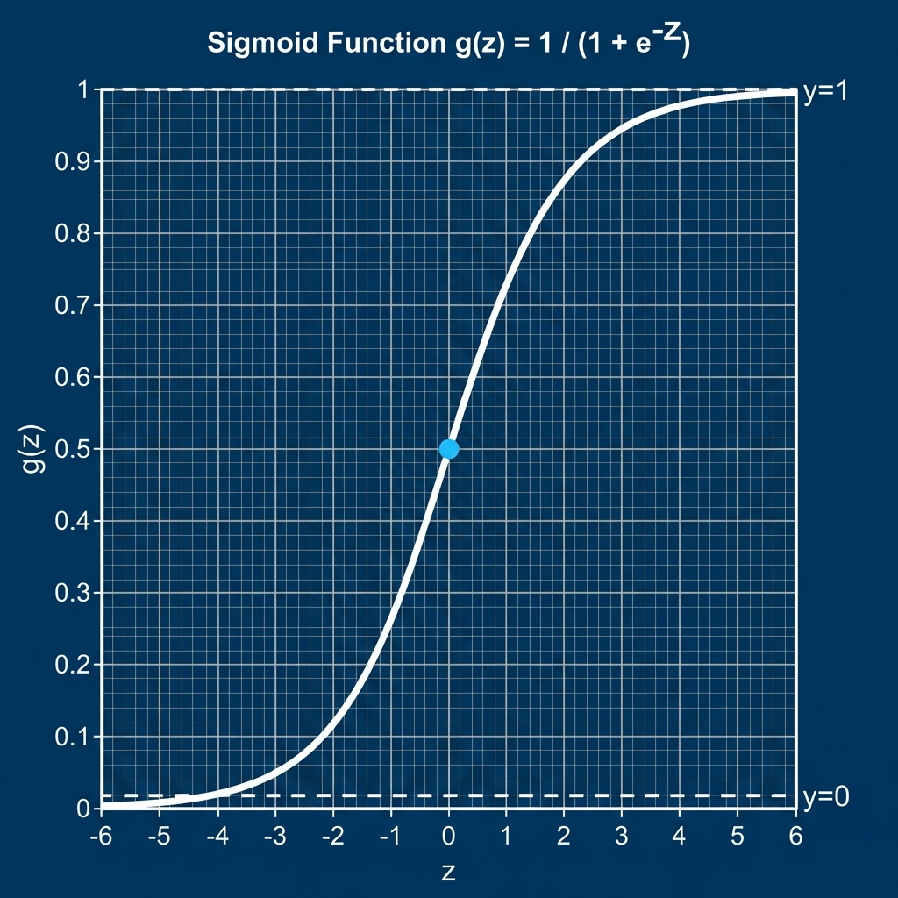
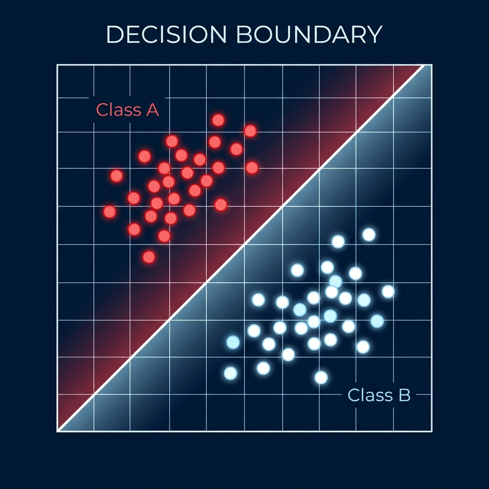
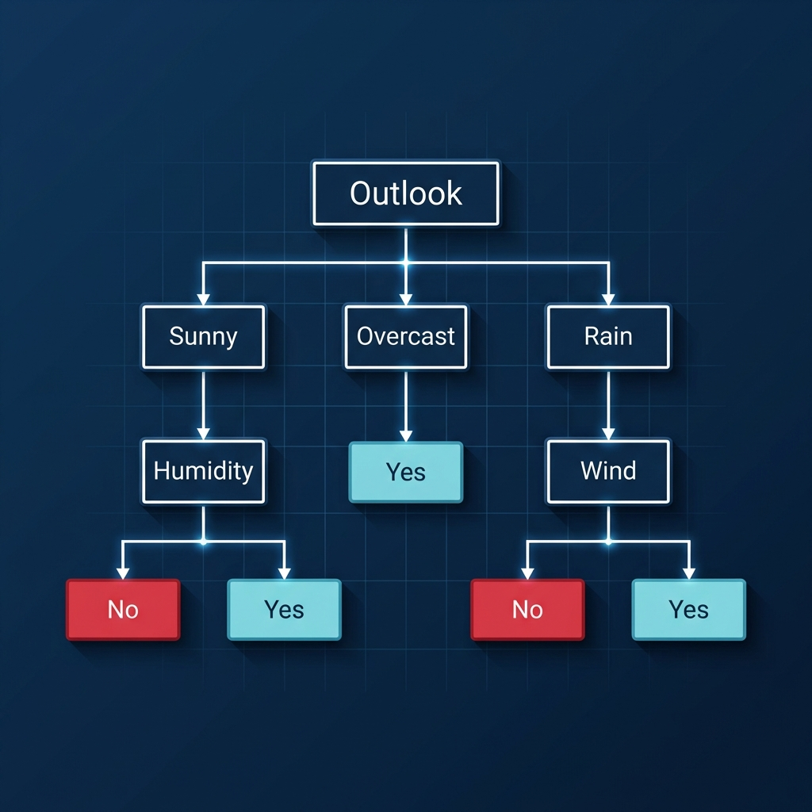

Supervised Learning Algorithms
Course: Computer Systems Engineering
Module: Artificial Intelligence (AI)
Topic: Supervised Learning (Regression & Classification)
Estimated Reading Time: 60 Minutes
By the end of this chapter, you will be able to:
1. Differentiate between Linear Regression (Continuous) and Logistic Regression (Categorical).
2. Calculate the Mean Squared Error (MSE) loss function for regression tasks.
3. Implement Gradient Descent from scratch to optimize model weights.
4. Construct a Decision Tree to classify data based on entropy and information gain.
5. Apply the Sigmoid activation function to transform linear outputs into probabilities.
Weeks 1-4 laid the foundation (Python, Math, Data). Now, we begin the core of AI: Machine Learning Models. In this chapter, we master the three "Workhorse" algorithms of industry: Linear Regression (Predicting Numbers), Logistic Regression (Predicting Categories), and Decision Trees (Making Rule-Based Decisions). We will build them from scratch to understand the math, then implement them in Scikit-Learn.
1. Introduction to Machine Learning
In Part 1, we learned the history and philosophy of AI. Now, we begin building it. We enter the domain of Machine Learning (ML), a subset of AI where computers learn to perform tasks without being explicitly programmed for every edge case.
In traditional programming, you write the rules: If variable > 5, Then return True. The
logic is hard-coded by the human.
In Machine Learning, we flip this paradigm. You provide the machine with the Answers (Data),
and the machine figures out the Rules. This allows us to solve problems where the rules are too
complex for humans to write down, such as recognizing a face or translating a language.
1.1 The Paradigms
Tom Mitchell (1998) famously defined ML as a program that improves its performance on a task through experience. We generally categorize this learning into three paradigms:
-
Supervised Learning: This is the most common form of ML and our focus for this week. In this paradigm, we act as a teacher. We provide the model with a dataset containing both the Inputs ($X$) and the Correct Answers ($y$). The goal of the model is to learn a mapping function ($f(x) \approx y$) so that it can predict the answer for new, unseen inputs.
Dataset Structure:
- Features ($X$): The input data (matrix of shape $m \times n$).
- Labels ($y$): The target answer (vector of shape $m \times 1$).
- Train/Test Split: Crucially, we split this data into two parts. We Train on one set and Test on a completely unseen set to ensure the model isn't just memorizing.There are two main types of Supervised Learning (see Figure 1 below):
-
Regression: Predicting a continuous number (e.g., Price, Temperature, Speed).
-
Classification: Predicting a discrete class (e.g., Spam/Not Spam, Cat/Dog).

Figure 1: Comparison between Regression (predicting values) and Classification (predicting categories).Visual Guide:
- Left (Regression): Notice the points following a continuous line (Predicting a number).
- Right (Classification): Notice the color boundary separating the red and white points (Predicting a category).Example 1: Medical DiagnosisImagine we are building an AI assistant for radiologists to analyze X-rays. Our goal is to automate the difficult task of disease detection to assist doctors in making faster decisions.
- Regression: If we ask the AI to calculate the estimated time left to recover (e.g., 14.5 days), this is a Regression problem because the answer is a continuous number.
- Classification: If we ask the AI to decide if the tumor is Benign or Malignant, this is a Classification problem because the answer is a distinct category (A or B).
-
Unsupervised Learning: Here, there is no teacher. The model is given only the Input data ($X$) without any labels. Its goal is to explore the data and find hidden structures or patterns on its own. A common application is Customer Segmentation (Clustering), where an algorithm groups customers with similar buying habits.
-
Reinforcement Learning: This is learning by trial and error. An agent interacts with an environment and receives feedback in the form of Rewards (for good actions) or Penalties (for bad ones). Over time, it learns a policy to maximize its total reward. This is how DeepMind's AlphaGo learned to play Go and how robots learn to walk.
2. Linear Regression: The "Hello World" of AI
We will start our journey with Linear Regression. While it is conceptually simple—often taught in high school statistics—it contains all the essential components of a modern Deep Learning system: a Model, a Loss Function, and an Optimization Algorithm.
2.1 The Model
The core idea is to find a relationship between an input variable ($x$) and an output variable ($y$). In its simplest form, we assume this relationship is a straight line. Mathematically, this is expressed as:
$$y = wx + b$$
-
$y$ (Prediction): The value we want to guess (e.g., House Price).
-
$x$ (Input): The feature we know (e.g., House Size in square meters).
-
$w$ (Weight): Also known as the slope or coefficient. This represents the importance of the input. A high weight means the House Size drastically affects the Price.
-
$b$ (Bias): Also known as the intercept. This allows the line to shift up or down, representing the base price of a house even if the size was zero.

Figure 2: The geometric interpretation of Slope (w) and Bias (b). Notice how the Slope controls the angle, and the Bias controls the starting height on the y-axis.
Imagine you are a developer coding the pricing algorithm for a ride-sharing app like Uber or Bolt. Your goal is to show the user an estimated price before they book the ride so they know exactly what to pay.
The Calculation:
We can think of the Linear Regression equation ($y = wx + b$) as the fare calculator. To find
the weight ($w$), ask the question: "What changes?" To find the bias ($b$), ask: "What stays the
same?"
- $w$ is the Slope (Variable Cost): This is the Price per KM (e.g., R15). We call it the slope because it determines how fast the price rises as you drive further. It is multiplied by the distance ($x$).
- $b$ is the Bias (Fixed Cost): This is the Base Booking Fee (e.g., R20). We call it the bias (or intercept) because you pay this amount even if the car doesn't move ($x=0$). It is the starting point.
$$ \text{Price} = \underbrace{15}_{\text{Slope}(w)} \times \underbrace{(10)}_{\text{Dist}(x)} + \underbrace{20}_{\text{Bias}(b)} = \text{R170} $$
The Goal: The entire "Learning" process is simply the computer trying to find the optimal specific numbers for $w$ and $b$ so that the line passes as close as possible to our data points.
2.2 The Cost Function (Loss)
How does the computer know if its current line is "good" or "bad"? We need a mathematical way to measure error. We typically use the Mean Squared Error (MSE), often called the Loss Function $J(w,b)$.
$$J(w,b) = \frac{1}{2m} \sum_{i=1}^{m} (\underbrace{wx^{(i)} + b}_{\text{Prediction}} - \underbrace{y^{(i)}}_{\text{Actual}})^2$$
In plain English: For every data point, we take the difference between the computer's prediction and the actual true price. We square this difference (making negative errors positive and penalizing large errors more heavily) and average it across all data points.
Continuing with our Uber app, suppose our algorithm predicted a fare of R170, but the actual trip cost ended up being R200 (perhaps due to traffic). We need a way to measure exactly how "wrong" our algorithm was so we can improve it.
The Calculation:
Let's apply the Full Loss Formula: $J(w,b) = \frac{1}{2m} \sum (\text{Pred} -
\text{Actual})^2$.
- Calculate Difference: $(170 - 200) = -30$.
- Square Difference: $(-30)^2 = 900$.
- Average it (The $\frac{1}{2m}$ part):
Assuming this is our only trip ($m=1$), we finish the math:
$$ J = \frac{1}{2(1)} \times 900 = \frac{900}{2} = 450 $$
The final Cost ($J$) is 450.
The Interpretation:
Why did we divide by 2? It's a mathematical trick to make the derivative (calculus) cleaner
later on. But the message is the same: 450 is the penalty score for this
model.
- High Loss: The line is far from the dots. The model is bad.
- Low Loss: The line is close to the dots. The model is good.

Figure 3: Visualizing the Error. The Red Lines are the residuals (Equation 1), and the Red Squares represent the Squared Error (Equation 2).
- Red Lines: Represent the raw distance ($y - \hat{y}$).
- Red Squares: Visually show the effect of squaring. Notice how a slightly longer line creates a massive square. This visually demonstrates why large errors are penalized so heavily.
2.3 Gradient Descent (The Optimization)
This is the "power" behind AI training. How does the computer find the best $w$ and $b$ without randomly guessing millions of combinations? It uses an algorithm called Gradient Descent.
Imagine you are standing on top of a mountain at night in dense fog. You cannot see the bottom of the
valley (the point of Minimum Loss). However, you can feel the slope of the ground under your feet. The
strategy is simple:
1. Feel the slope (Calculate the Gradient).
2. Take a small step downhill (Update Weights).
3. Repeat until the slope is zero (Convergence), as shown in Figure 4.

Figure 4: The 'Loss Landscape'. This 3D bowl represents all possible errors. The red path shows the algorithm 'walking' down to the bottom (minimum error).
Mathematically, we update each weight by subtracting the gradient multiplied by a Learning Rate ($\alpha$). The Learning Rate determines the size of the step. If it's too big, you might overshoot the valley. If it's too small, it might take forever to reach the bottom.
We call it "Descent" because we are trying to travel down the error surface to find the lowest possible error.
Systems Thinking:
Think of each step of Gradient Descent as a computed cycle. A complex model needs millions of
steps.
- Learning Rate: Determines how fast we move. Too fast = unstable system; Too
slow = wasted compute cycles.
- Memory: Storing the gradients for millions of parameters requires massive RAM
(which is why we need GPUs).
3. Regression vs. Classification
In Part 1, we learned Linear Regression, where the goal was to predict a continuous numerical output ($y$), such as a house price of R350,000. However, many real-world problems aren't about "how much," but about "which one."
In Classification, we predict a categorical label. Instead of an infinite range of numbers, the output is limited to a discrete set of classes.
-
Binary Classification: Two possible classes (0 or 1). Example: Is this transaction Fraud (1) or Legal (0)?
-
Multi-Class Classification: More than two classes. Example: Is this image a Cat, a Dog, or a Bird?
| Feature | Regression | Classification |
|---|---|---|
| Output Type | Continuous Number | Discrete Label/Category |
| Example | Temperature ($23.5^\circ C$) | Weather (Sunny/Rainy) |
| Key Algo | Linear Regression | Logistic Regression, Decision Trees |
4. Logistic Regression
Despite its confusing name, Logistic Regression is a classification algorithm, not a regression one. It gets its name because it starts with the same underlying math as Linear Regression but adds a critical twist to make it suitable for categories.
4.1 The Problem with Lines
There are two main reasons why we cannot simply use a straight line (Linear Regression) for classification:
- Unbounded Output: A straight line continues forever. For a very large feature input (e.g., a huge tumor), the linear equation might output a value like 5.7. What does "5.7 Malignant" mean? It's confusing. We need a probability between 0 and 1.
- Sensitivity to Outliers: Linear regression tries to minimize the distance to all points. If you add just one extreme outlier far to the right, the entire line tilts to accommodate it. This shifting angle ruins the threshold point, causing the model to misclassify normal data points.

Figure 5: Why Linear Regression fails for classification. The straight line (Left) overshoots 0 and 1, whereas the Logistic Curve (Right) fits the binary data perfectly.
Imagine predicting if a tumor is malignant based on size. A linear line might output 5.7, which makes no sense as a probability. We need a value between 0 (0%) and 1 (100%).
4.2 The Sigmoid Function
To address the limitations shown in Figure 5, we do not discard the linear model; instead, we transform its output using a special activation function. We take the linear result ($z = wx + b$) and pass it through the Sigmoid Activation Function:
$$g(z) = \frac{1}{1 + e^{-z}}$$
Breaking down the Math:
-
$z$ (The Linear Score): This is just our familiar equation $wx + b$. It represents the raw "confidence score" before we turn it into a probability.
-
$e$ (Euler's Number): A mathematical constant approximately equal to 2.718.
-
The Effect: This formula mathematically forces any input ($z$)—from negative infinity to positive infinity—to "squash" strictly into the range 0 to 1.

Figure 6: The Sigmoid Function. It "squashes" any number into the 0 to 1 range.
- High Input ($z$): The curve flattens near top 1 (Yes).
- Low Input ($-z$): The curve flattens near bottom 0 (No).
- Zero Input: The curve passes exactly through 0.5.
4.3 The Decision Boundary
The model outputs a probability (e.g., 0.85). To get a final "Class", we need to make a decision. We apply a Threshold, typically 0.5.
-
If Probability $\geq$ 0.5 $\rightarrow$ Predict Class 1.
-
If Probability $<$ 0.5 $\rightarrow$ Predict Class 0.

Figure 7: All points above the white line are classified as Red Squares (Class B), and all below are White Circles (Class A).
The line where the probability is exactly 0.5 is called the Decision Boundary.
The Line in the Sand:
Think of the Decision Boundary as the crossover point where the model stops being "more likely No" and
starts being "more likely Yes".
-
In a 1D problem (like Tumor Size), the boundary is a single Point (e.g., "Size > 4cm").
-
In a 2D problem (like Exam Score 1 vs Exam Score 2), the boundary is a Line.
-
In a 3D problem, it becomes a Plane.
Crucially, even though the Sigmoid function is curvy (S-shape), the decision boundary created by Logistic Regression is always a Straight Line (Linear).
5. Decision Trees
While Logistic Regression behaves like a mathematician trying to draw a single, smooth dividing line through the data, Decision Trees take a completely different approach. They behave like a human playing the game "20 Questions".
Instead of using complex calculus to find a curve, a Decision Tree solves the problem by breaking it down into a series of simple, logical rules. It asks a sequence of Yes/No questions to progressively narrow down the possibilities until it reaches a confident answer. This makes the model extremely easy to understand and visualize.

Figure 8: A Decision Tree determining if we should play tennis based on weather conditions.
The Process:
1. Is it Raining?
- If Yes $\rightarrow$ Check Wind.
- If No (Sunny/Overcast) $\rightarrow$ Play.
2. Is it Windy? (Only if raining)
- Strong Wind $\rightarrow$ Don't Play.
- Weak Wind $\rightarrow$ Play.
5.1 Measuring Purity (Entropy)
The "Learning" part of a Decision Tree involves figuring out which question to ask first. Should we ask about the Wind or the Rain?
To decide, the algorithm uses a metric called Entropy, which measures the chaos or impurity of a group.
-
High Entropy (High Chaos): A group mixed with 50% "Play" and 50% "Don't Play." It's hard to make a prediction here.
-
Low Entropy (Low Chaos): A group with 100% "Play." The decision is obvious.
The algorithm (such as ID3 or CART) calculates Information Gain. It looks at every possible feature (Wind, Temp, Humidity) and picks the one that reduces Entropy the most—effectively splitting the messy mixed groups into cleaner, purer subgroups.
6. Summary
We have expanded our toolkit from identifying relationships (Regression) to making choices (Classification).
-
Logistic Regression uses the Sigmoid function to output probabilities.
-
Decision Trees use hierarchical questions based on Information Gain to split data.
Next week, we will tackle the final paradigm of classical Machine Learning: Unsupervised Learning. What happens when we have data but no labels at all?
7. Lab Review
We have prepared four practical experiments to solidify these concepts.
7.1 Lab 1 & 2: Linear Regression (House Prices)
We tackle the classic problem of House Price Prediction in two ways:
-
The "Easy" Way (Scikit-Learn): Implementing a full pipeline in just 3 lines of code.
-
The "Hard" Way (NumPy): Implementing the Forward Pass, Loss Function, and Gradient Descent from scratch to understand the math.
-
Interactive Visualization: We generate a 3D plot of weights vs. loss to watch Gradient Descent "walk" down the valley in real-time.
7.2 Lab 3: Logistic Regression (Rent vs. Area)
We revisit housing data but ask a classification question: "Is this apartment affordable?" (Yes/No). You will see how the Logistic curve fits the data differently than the straight line of regression.
7.3 Lab 4: Decision Trees (Play Tennis?)
We use the classic "Play Tennis" dataset to train a Decision Tree. The highlight is using
graphviz to visualize the tree and trace the AI's logic branch by branch.
Ready to code? Access the step-by-step lab guides here:
Test Your Knowledge
Ready to check your understanding of this week's material? Take the interactive quiz now!
Start Quiz